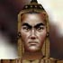

and watch over you in times of disease.
|  | Brother Estle | 雑談？▼ |
|
Brother Estle says 'Greetings child of life. The way of the [Prime Healer] shall set you free and cleanse your soul. I hope to see you in [mass]. | ||
| Brother Estle 「ごきげんよう、命の子よ。[ Prime Healer（最上の癒し手）]の道が 汝を自由にし、汝の魂を浄化するだろう。私は[ ミサ ]で 君に会うことを祈る。 | ||
|
Brother Trintle | |
|
Brother Trintle says 'Greetings. May [Rodcet Nife] keep you healthy and watch over you in times of disease. | ||
| Brother Trintle 「ごきげんよう。[ Rodcet Nife ]が貴殿の健康を 守りつづけ、病める時には貴殿を見守りますよう。 | ||
 |
Misty Storyswapper | |
|
Misty Storyswapper says 'Nice to meet you Shriast. If you are a fellow bard, I must inform you that you will make no profit around here. Not with Guard McCluskey around. | ||
| Misty Storyswapper 「お会いできてうれしいわ Shriast。あなたが 仲間のバードなら、このあたりには何も利益になるものはないことを 教えておいてあげなくちゃね。Guard McCluskey の近くには 行かないほうがいいわ。 | ||
| 訳は「Guard McCluskey の近くでは利益になるものがない」かも。 | ||
 |
Kobot Dellin | |
|
Kobot Dellin says 'No time to talk!! I must be on my way. I am in a race with the paladins from the Temple of Life. | ||
| Kobot Dellin 「話してる暇はない！！ 俺は行かなきゃならないんだ。 Temple of Life のパラディンと競争してるんだよ。 | ||
| ・・・なんでしょう（笑） 競争相手は下の人か？ | ||
|
Tolony Marle | |
|
Tolony Marle says 'No time to talk!! I must be off. The grains of sand are falling and I must prove that we paladins from the Temple of Thunder are the quickest. | ||
| Tolony Marle 「話をしている時間はない！！ 私は出発しなければ。 砂の粒が落ちる、そして私は我々 Temple of Thunder のパラディンが もっとも速いことを立証せねばならん。 | ||
| 砂時計でタイム計ってる・・・ということでしょうか？ パラディンも結構ヒマなことやってるなぁ。SHD、NECのクエストで殺される人だそうです。不幸。（情報提供：Isariaさん） | ||
 |
Guard McCluskey | |
|
Guard McCluskey says 'How are you? You better have a good reason for bothering me. I am a busy man. | ||
| Guard McCluskey 「ごきげんいかがかな？ 私をわざわざ邪魔する にはそれなりの理由を用意したまえ。私は忙しい男でな。 | ||
|
Guard Donlan | |
|
Guard Donlan says 'Welcome traveler. Have I informed you about the travel tax? | ||
| Guard Donlan 「ようこそ旅行者さん。俺は旅行税について 知らせたっけかな？ | ||
|
Caninel | |
| Caninel says 'Leave me alone. | ||
| Caninel 「放っておいてくれ。 | ||